Guide › Class tools
Class tools
A timer, a name picker and polls, ready whenever you need them. Start one at the board and finish it from your iPad: they all stay in step.
1. Open Class tools
- On the PC whiteboard: the Class button (1) in the top bar.
- On the iPad or iPhone: the Class tools button (the stopwatch).
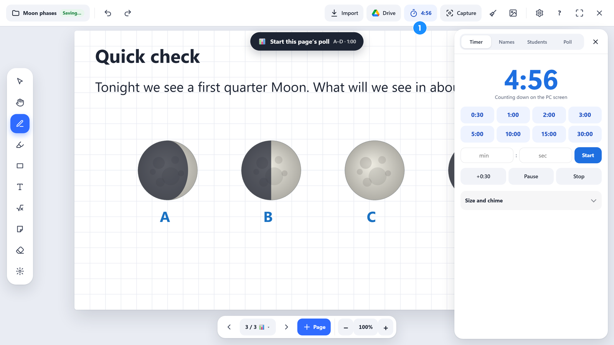
Class tools has four tabs: Timer, Names (the name picker), Students and Poll. Students has its own page. Each tab shows what you use in the lesson first; settings you rarely change are folded away below (tap to open them; PadLink remembers).
2. Timer
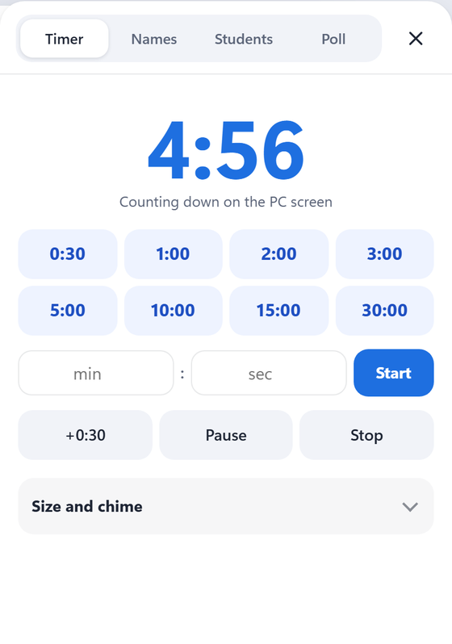
- Tap a time (0:30 to 30:00), or type minutes and seconds and tap Start.
- +0:30 adds time; Pause and Stop do what they say.
- A blue box counts down in the bottom-right corner of the PC screen, over any app, so it shows on your slides too. Choose Small, Medium or Large.
- While a class is open, students see the time left on their screens.
- At zero, the PC chimes and the box flashes Time's up! Your iPad chimes too, if it's awake. Either chime can be switched off (in Size and chime). The same switches do polls: when a poll's time runs out, the same bell plays once.
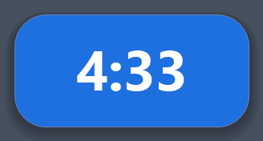
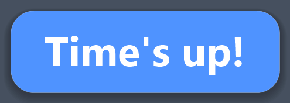
3. Class lists
The name picker and Student Mode both use your class lists. Make one once and it's kept for every lesson.
- Open the Names tab and tap Add a class (or ＋).
- Give it a name, like Period 3 · Science.
- Type a name in each row; Enter starts the next row, and ＋ Add student adds one.
- Tap Save.

- Paste a whole list: copy the name column from a spreadsheet and paste it into a name box. Every row fills in.
- Team and Seat are optional, for making teams (see Teams).
- Edit changes a list later; ✕ removes a student (it asks first). The same name twice is pointed out before saving.
4. Name picker
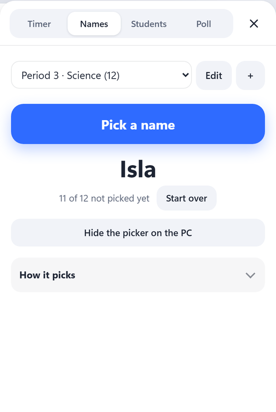
- Choose the class.
- Under How it picks, choose how it shows on the PC screen: a Spinning wheel or Flashing names.
- Tap Pick a name.
The wheel spins on the PC screen, ticking like a prize wheel as it slows, and lands on a name. The name shows on your iPad too. Tap Spin again before it stops for a fresh spin with a new name: the one it was heading for goes back in the draw.
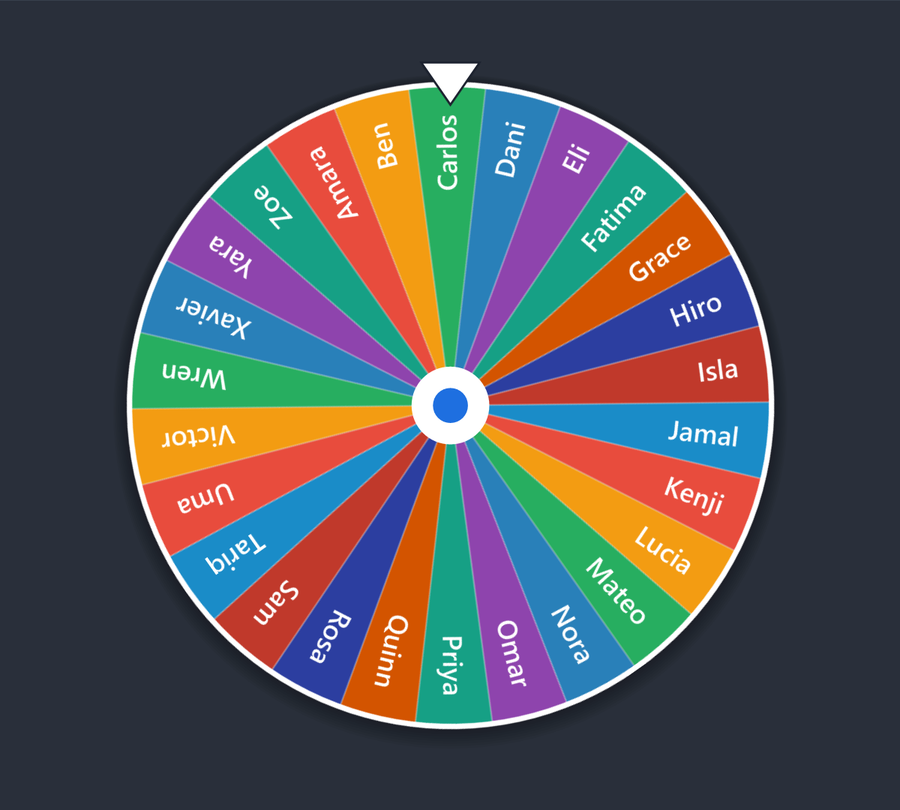
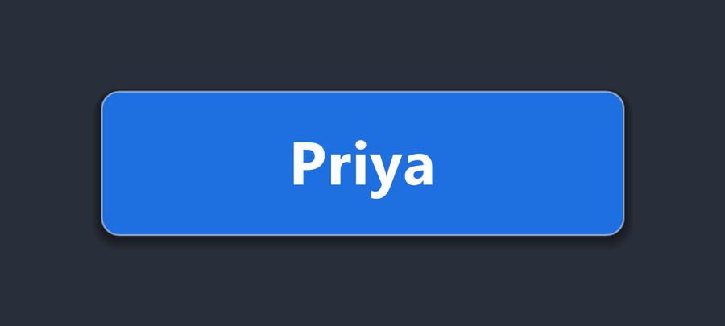
- Everyone once, then repeat goes through the whole class before anyone is picked again, even across lessons. Start over resets it.
- Anyone, every time picks from everyone, every time.
- Switch off the ticking sound if you like; Hide the picker on the PC takes it off the screen.
Choosing the name yourself (iPad or iPhone)
Sometimes you know who should answer next, like the popsicle stick you happen to pull. Hold Pick a name on your iPad or iPhone, and a list of the class opens on your device only:
- Land on: tap a student. The PC picks them the usual way, with the same wheel or flashing names, timing and ticking, and they count as picked.
- Leave out today: tap students random picks should skip today, for example someone who's absent or not ready to be put on the spot. Tap again to put them back. Tomorrow everyone is back in.
A quick tap on Pick a name still picks at random.
5. Run a poll
Polls need students in the class first (see Students). Then, in the Poll tab:
- Choose the answers: Multiple choice, True / False, Yes / No, 🔢 Number, ✍️ Short answer, 📝 Long answer or ✏️ Draw. Multiple choice starts with A–D. Tap − or + for fewer or more choices, from A–B up to A–H.
- Type the Question (optional). It shows on the whiteboard and students' screens. Or leave it empty, and put the question on the whiteboard or ask it aloud.
- Tap the Correct answer (optional). For a number or short answer, type it. Students don't see it until you show it, after the results.
- Choose a time limit, or No limit.
- Tap Start the poll.
If the page has a poll ready (see Prepare polls ahead), just tap Start this page's poll at the top of the whiteboard. Controlling the PC from your iPad or iPhone, the same button is at the top of its whiteboard. Before you open a class, it says Poll ready (or how many polls the page has). After a few seconds it tucks into a small 📊 in the corner, out of the projector's way; tap it to bring it back.
🔢 Numbers and ✍️ short answers
Choose 🔢 Number or ✍️ Short answer, and each student gets a box to type in instead of buttons. They type, then tap Lock it in (or press Enter).
- Number takes whole numbers, decimals and fractions. PadLink counts answers that mean the same as one: 1,000 and 1000, or 3/4 and 0.75.
- Short answer takes a word or a few words. Capitals, extra spaces and a period at the end don't matter: The Nile and the nile. count as one.
- Each student sees only their own answer. The whiteboard shows the answers only once you close the poll, and short answers stay folded there until you tap to see them, in case someone typed something silly.
- 📝 Long answer is for a few sentences or a paragraph: up to 1,000 characters, in a big box (Enter starts a new line; they tap Lock it in when done). Each answer is shown in full, never grouped into bars, and they stay folded on the whiteboard until you tap to see them.
- Tap the correct answer to mark it. Tap Hide next to any answer you don't want the class to see, then Show results.
- Preparing ahead? The 📊 Poll editor has a Correct answer box for these.
✏️ Draw your answer
Choose ✏️ Draw instead of letters, and each student gets a drawing pad in the poll card: a pen, an eraser, 4 colors, thin or thick, undo and clear. Tick Draw on a picture of the whiteboard page and the pad shows the page you're on, so they can circle, shade or sketch right on the worksheet. Their own page stays as it is.
- Students can make the pad full screen (⤢) and zoom in with a pinch, Ctrl + mouse wheel, or − and + (Fit shows the whole page again).
- Once they tap Lock it in, their screen shows only Answer locked in.
- The drawings appear in the Poll tab as a gallery: on your iPad or iPhone as they come in, on the whiteboard once you close the poll. Tap 2 to 4 and Show side by side, or Show all. Names stay hidden unless you tick Show names.
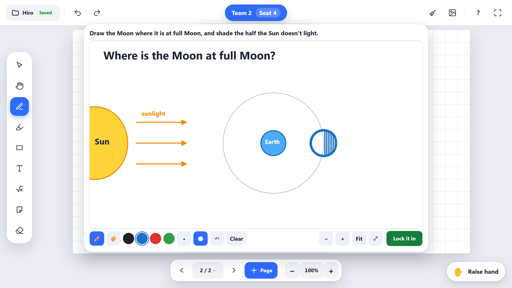
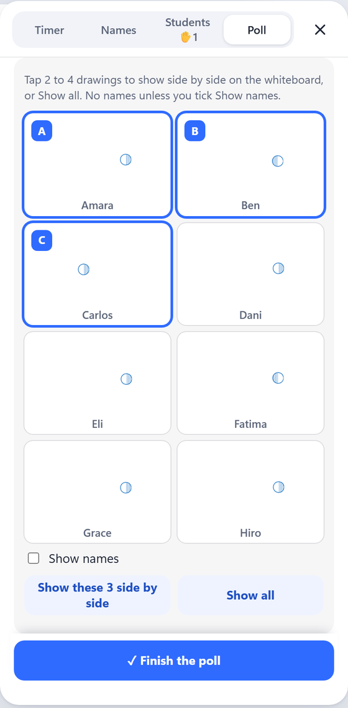
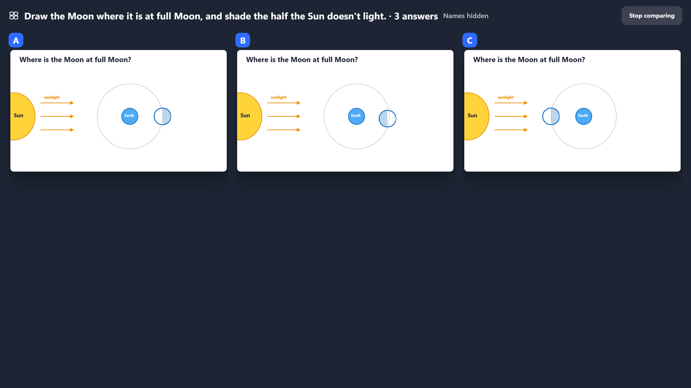
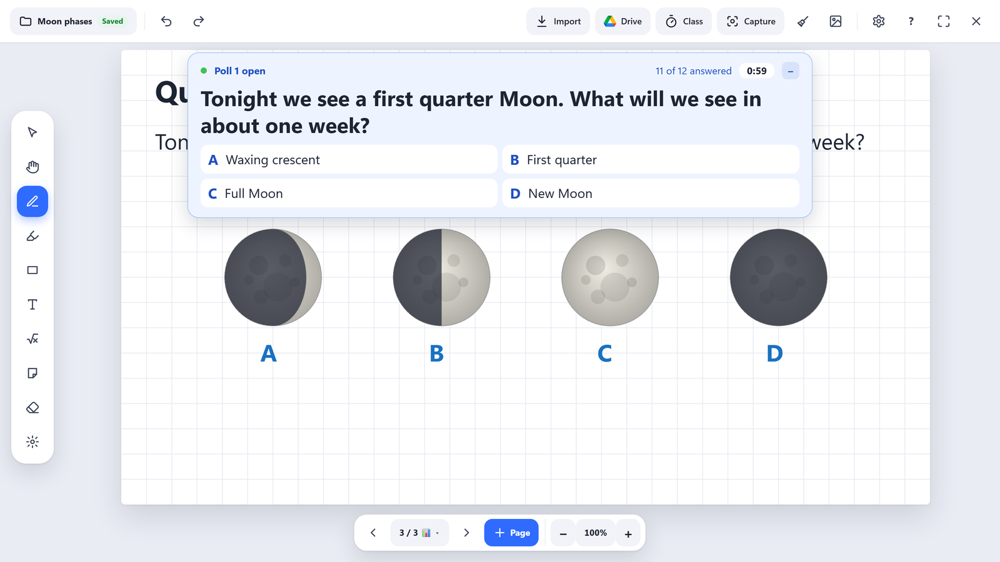
On students' devices, big answer buttons appear at the bottom of each student's screen. Students tap one, then Lock it in.
Question in the way? Students tap Hide (beside the time left) to see the whole page behind it. A small bar stays at the bottom with the countdown (orange in the last 10 seconds) and whether they've answered. They tap Show to answer. Their choice, typing or drawing stays as it was, and the question opens by itself when the poll closes.
While the poll is open, students can't draw (except in a draw poll). They can zoom in and move the page to see a graph or table up close: drag to move it, two fingers or the + and − buttons to zoom, and Whole page (or 100% on their own board) to see it all again. They start on your view of the page. The page fits above the question, so nothing is hidden under it. This changes only their own screen. When the poll closes, their tools come back and they're back on your view.
Question in the way on the whiteboard? While the poll is open, tap Hide the question on the whiteboard in Class tools → Poll (on the PC or the iPad), and Show the question on the whiteboard to bring it back. Students' screens still have it.
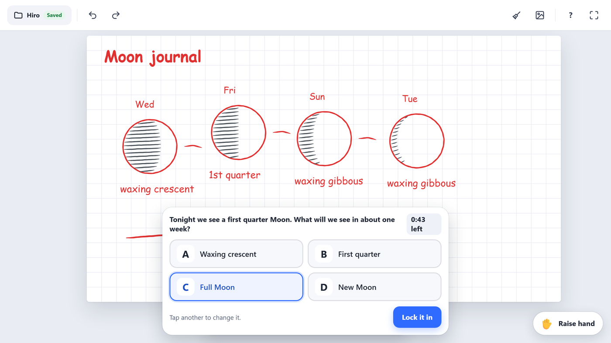
- Once locked in, their screen shows only Answer locked in, so a neighbor can't copy it.
- Change answer lets them change their mind until the poll closes.
- Your iPad or iPhone shows the bars filling in as answers arrive.
Tap Close the poll when you're ready, or let the time run out (+0:30 adds time).
When a poll's time runs out, the PC chimes once (the timer's three notes, played once instead of twice), and your iPad too if its chime is on. Closing the poll yourself makes no sound. The timer's chime switches turn it off.
Time ran out, but some students aren't done? Tap +1:00 more time: the poll opens again for another minute. What they already answered stays, and they can still answer or change it.
6. Results and the correct answer
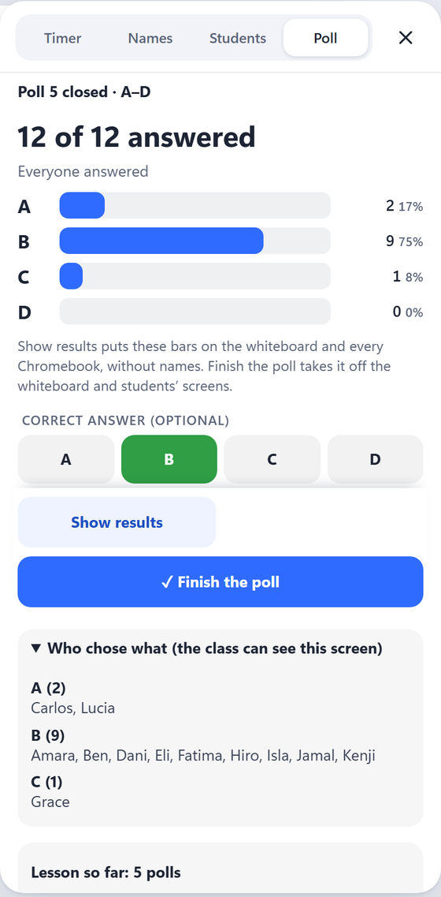
- Class tools shows each answer's count and percent.
- Correct answer (optional) marks one, if you didn't pick it before Start.
- Who chose what lists names. It's folded away on the whiteboard, since the class can see that screen.
- Show results puts the bars on the whiteboard and every student's screen, without names. Each student sees their own answer marked. The correct answer isn't shown yet, so you can talk about the results first.
- Show the correct answer (in Class tools, or under the results on the whiteboard) marks it in green for everyone. Each student sees ✓ You got it or the correct answer.
- ✓ Finish the poll when you're done. The question, the results and each student's answer leave the whiteboard and every student's screen.
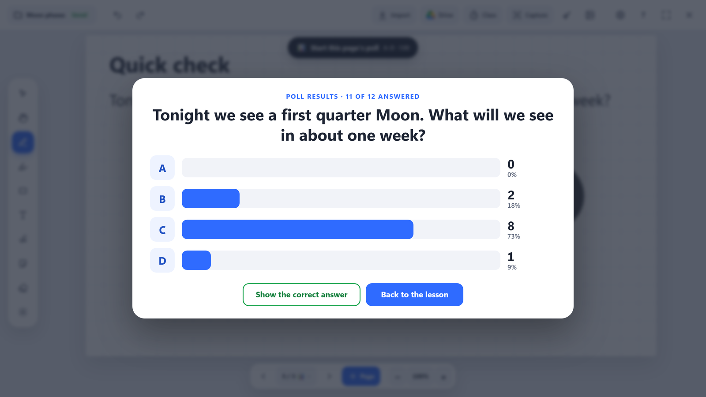
7. Prepare polls ahead
Put a poll on a whiteboard page while you plan, on the PC or in PadLink Go. In class, the page offers Start this page's poll.
One page: Poll tab → 📊 Poll for this page (or the page number menu → 📊 Poll).
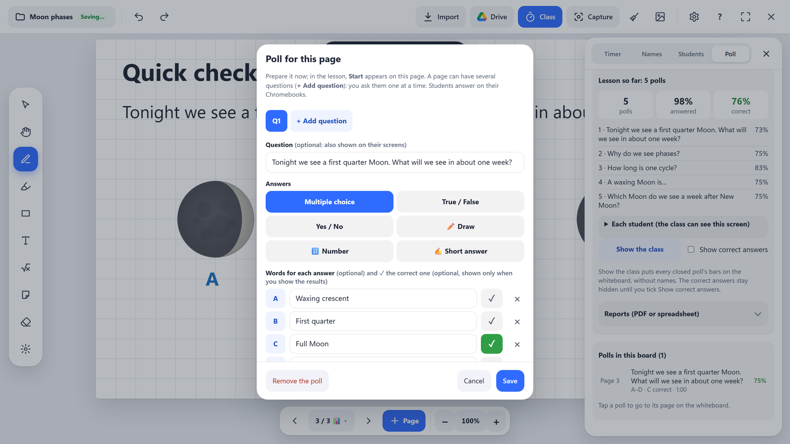
- A question (optional; it's shown on students' screens too), the answers, and words for each answer (optional).
- Multiple choice starts with A–D. Tap + Add a choice for another one (up to H), or × beside a choice to take it away. The choices after it move up a letter, keeping their words.
- Tick ✓ the correct answer (optional). It stays hidden from the class until you tap Show the correct answer.
- A time limit, and Shuffle to give each student their own button order (A is still A).
Several questions on one page (a worksheet or bell ringer): in the poll editor, tap + Add question. Each question gets a tab (Q1, Q2…) and its own type: A–D, True/False, Yes/No or Draw. ◀ ▶ change their order.
- In class, the page offers Start question 1 of 4. When a question ends, it offers Next: question 2 of 4, and waits for your tap, so you can talk about the results first.
- At their own pace, students answer the page's questions one after another (Question 2 of 4), and the progress grid counts each one.
Many at once: Poll tab → 📋 Paste questions. Paste or type your questions, with a blank line between them and a * before each correct answer. For a typed answer, put = 12 (a number) or = Paris (a short answer) on the line under the question. Choose A new page for each, or All on this page for a worksheet that already shows the questions.
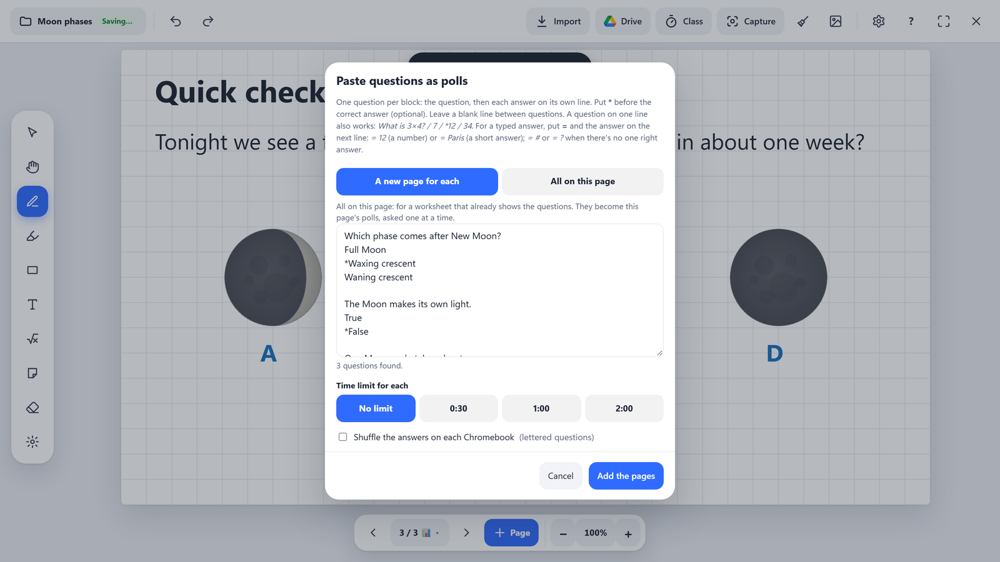
8. Lesson so far
The Poll tab keeps a running summary of the lesson's polls: how many answered, the percent correct, and each poll's result.
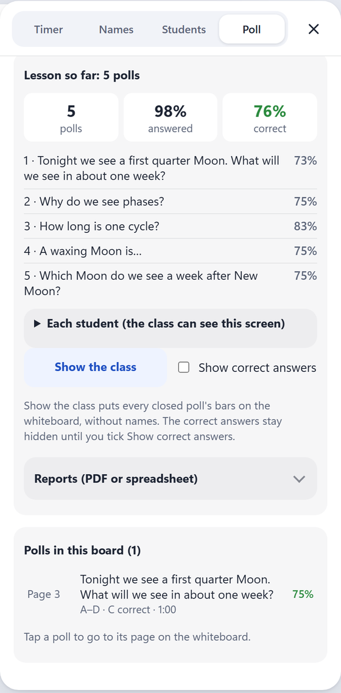
- Each student shows names and scores (folded away on the whiteboard).
- Show the class puts How we did today on the whiteboard: every poll's bars, never names. Tick Show correct answers to reveal them.
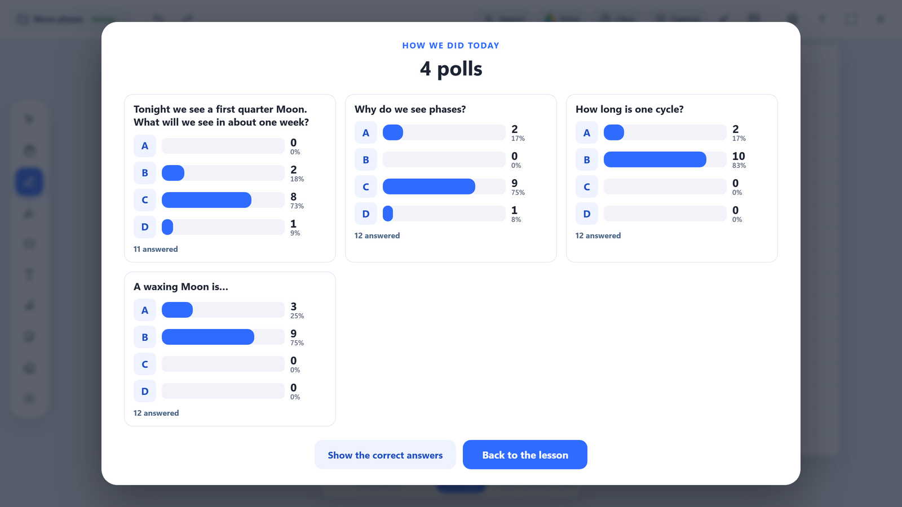
9. Poll report and spreadsheet
- Under Reports: PDF report: a printable summary of the lesson's polls. Percent correct, which questions to reteach (and the most common wrong answer), how many changed their answer, and each student's answers and score.
- Export as CSV: the same answers as a spreadsheet, one row per student and one column per poll.
- Both are saved on the PC in Documents › PadLink › Poll results. Untick With students' names for "Student 1", "Student 2" instead.
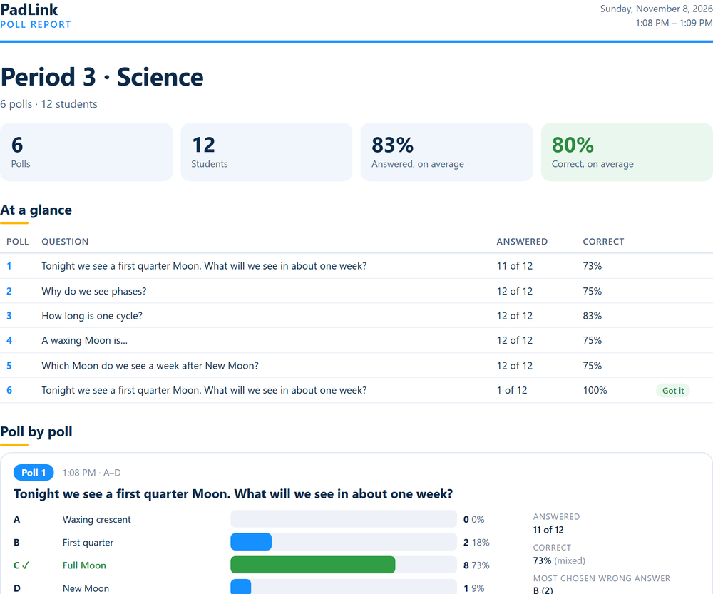